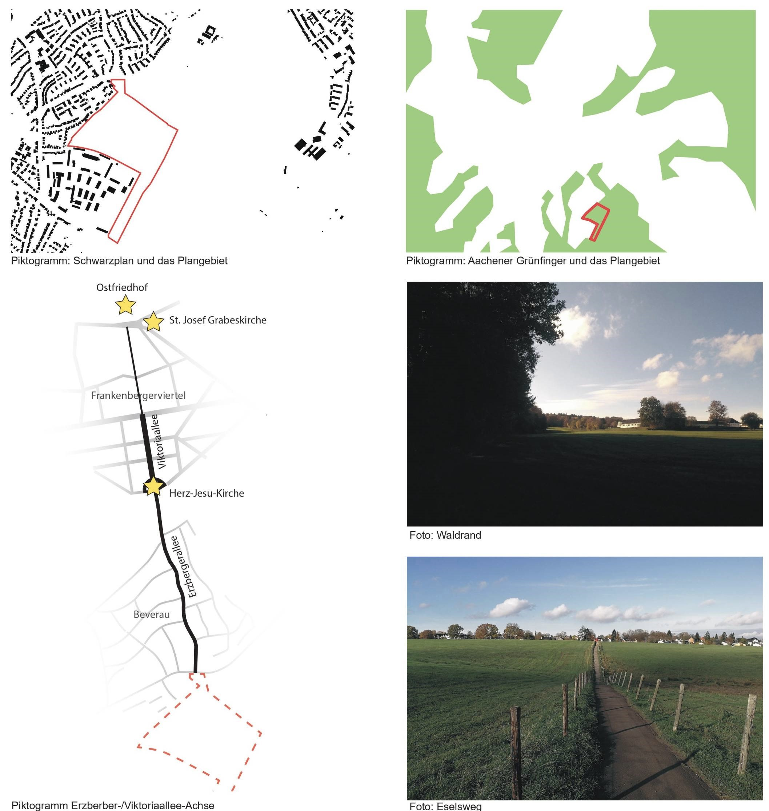
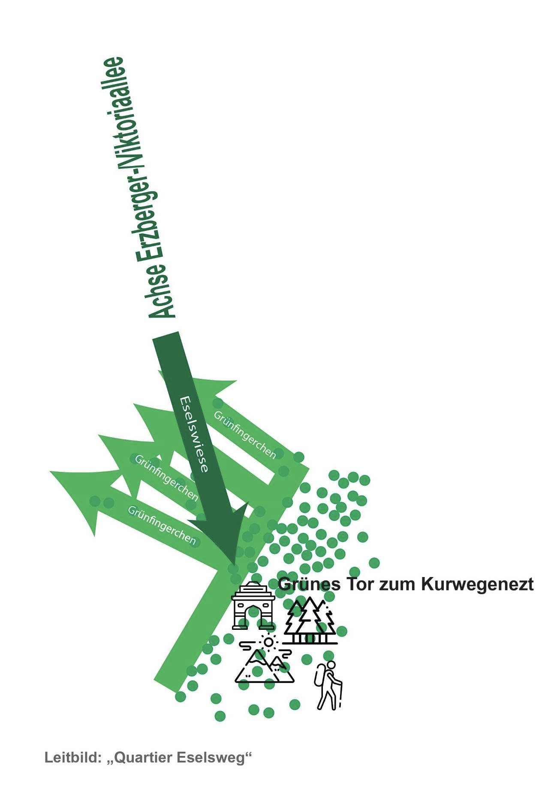

An urban planning study for a new residential quarter in Aachen Beverau — developed at the Faculty for Civil Engineering. The project establishes a green corridor connecting the site to Aachen's wider network of public paths and open spaces.

